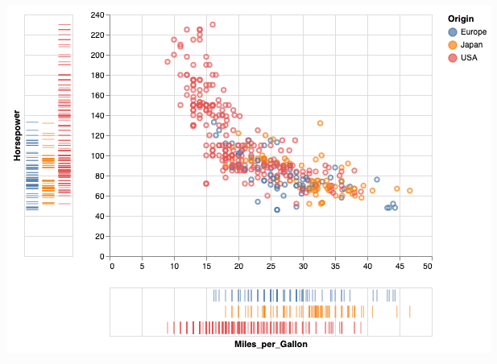
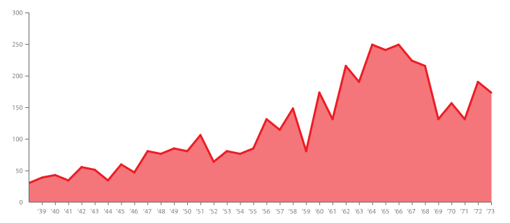

Facet
IIC2026
Yuxtaposición y vistas coordinadas
Facet
IIC2026
Yuxtaposición y vistas coordinadas
Separar espacio en más de una vista simulatanea.
Yuxtaposición y vistas coordinadas
Compartir codificaciones visuales
Compartir datos
Organizar vistas
Visibilidad de vistas
Compartir codificaciones visuales
¿Vistas separadas comparten todas las codificacione visuales o se diferencia en alguna?
Compartir codificaciones visuales

(Fuente: Altair - Dot dash plot )
Compartir codificaciones visuales
(Fuente: Altair - Dot dash plot )
Compartir codificaciones visuales
Compartir datos
¿Los ítems presentados entre vistas coinciden?
- Datos compartidos
- Panorámica-detalle
- Partición de datos
¿Compartir datos y codificaciones ?

(Fuente: DataViz Catalogue - Gráfico de Área )
Panorámica-detalle
Una vista muestra un subconjunto del los datos mostrados en otra vista.
Panorámica-detalle
(Fuente: Observable - Focus + Context )
Partición de datos
No se comparten datos entre vistas, se reparten entre ellas.
Multiples pequeños

(Fuente: Craft beer — so hot right now. But what city is the microbrew capital of the US? )
Organización y visibilidad de vistas
¿Cómo se reparten espacialmente las vistas?
¿Están todas las vistas visibles continuamente?